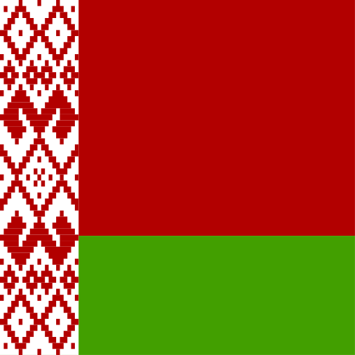
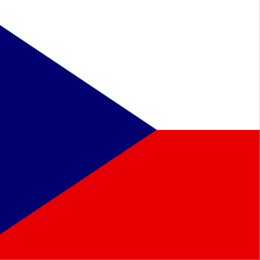
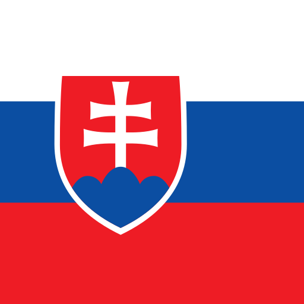

Symposium Organizing Committee
Chairman
-
 Prof. dr. Vincentas Lamanauskas,
Prof. dr. Vincentas Lamanauskas,
Siauliai University, Lithuania
Members
-
Dr. Violeta Slekienė,
Siauliai University, Lithuania -
Dr. Laima Railiene,
SMC „Scientia Educologica“, Lithuania -
Dr. Loreta Raguliene,
SMC „Scientia Educologica“, Lithuania -
 Prof. dr. Dagnija Cedere,
Prof. dr. Dagnija Cedere,
University of Latvia, Latvia -

Dr. Elena Vasilevskaya,
Belarusian State University, Republic of Belarus -
 Irina Zikina,
Irina Zikina,
Tallinn Linnamae Russian Lyceum, Estonia -
Prof. dr. Miia Rannikmae,
University of Tartu, Estonia
* To be extended
Symposium Scientific Committee
Chairman
-
Prof. dr. Vincentas Lamanauskas,
Siauliai University, Lithuania
Members
-
 Prof. dr. Boris Aberšek,
Prof. dr. Boris Aberšek,
University of Maribor, Slovenia -
Prof. dr. Metka Kordigel-Aberšek,
University of Maribor, Slovenia -
 Prof. dr. Agnaldo Arroio,
Prof. dr. Agnaldo Arroio,
University of Sao Paulo, Brazil -
Prof. dr. Marco Antonio Bueno Filho,
Federal University of ABC, Santo André, Brazil -

Prof.dr. Martin Bilek,
Hradec Kralove University, Czech Republic -
Prof.dr. Andris Broks,
University of Latvia, Latvia -
Prof.dr. Dagnija Cedere,
University of Latvia, Latvia -
Dr. Todar Lakhvich,
Belarusian State Medical University, Republic of Belarus -

Prof.dr. Milan Turčani,
Constantine the Philosopher University, Nitra, Slovakia -
 Prof. dr. Muammer Çalik,
Prof. dr. Muammer Çalik,
Karadeniz Technical University, Turkey
* To be extended